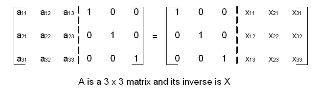

Matrix Inverse¶
-
riscv_status
riscv_mat_inverse_f32(const riscv_matrix_instance_f32 *pSrc, riscv_matrix_instance_f32 *pDst)¶
-
riscv_status
riscv_mat_inverse_f64(const riscv_matrix_instance_f64 *pSrc, riscv_matrix_instance_f64 *pDst)¶
-
group
MatrixInv Computes the inverse of a matrix.
The inverse is defined only if the input matrix is square and non-singular (the determinant is non-zero). The function checks that the input and output matrices are square and of the same size.
Matrix inversion is numerically sensitive and the NMSIS DSP library only supports matrix inversion of floating-point matrices.
- Algorithm
The Gauss-Jordan method is used to find the inverse. The algorithm performs a sequence of elementary row-operations until it reduces the input matrix to an identity matrix. Applying the same sequence of elementary row-operations to an identity matrix yields the inverse matrix. If the input matrix is singular, then the algorithm terminates and returns error status
RISCV_MATH_SINGULAR. 
Functions
-
riscv_status
riscv_mat_inverse_f32(const riscv_matrix_instance_f32 *pSrc, riscv_matrix_instance_f32 *pDst) Floating-point matrix inverse.
- Return
execution status
RISCV_MATH_SUCCESS : Operation successful
RISCV_MATH_SIZE_MISMATCH : Matrix size check failed
RISCV_MATH_SINGULAR : Input matrix is found to be singular (non-invertible)
- Parameters
[in] pSrc: points to input matrix structure[out] pDst: points to output matrix structure
-
riscv_status
riscv_mat_inverse_f64(const riscv_matrix_instance_f64 *pSrc, riscv_matrix_instance_f64 *pDst) Floating-point (64 bit) matrix inverse.
Floating-point matrix inverse.
- Return
execution status
RISCV_MATH_SUCCESS : Operation successful
RISCV_MATH_SIZE_MISMATCH : Matrix size check failed
RISCV_MATH_SINGULAR : Input matrix is found to be singular (non-invertible)
- Parameters
[in] pSrc: points to input matrix structure[out] pDst: points to output matrix structure